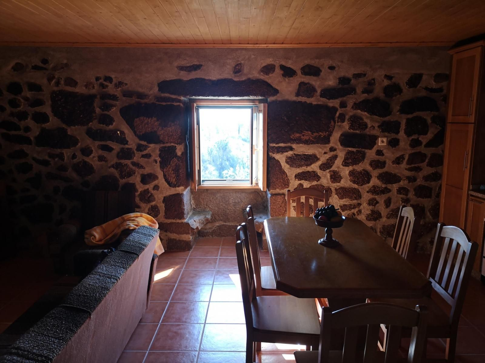
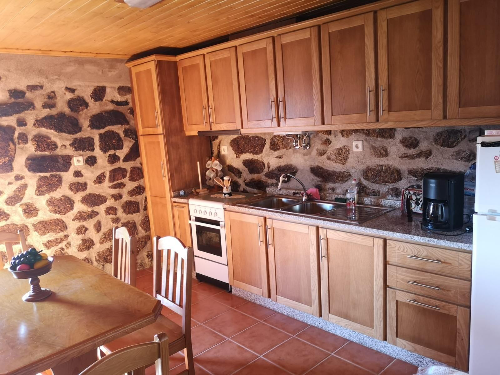

A Casa
Uma casa tradicional de granito com um quarto, remodelada para receber famílias e amigos sem perder o que tinha de antigo.
Pedra, madeira e lareira
Paredes de pedra à vista, tetos forrados a madeira e chão de tijoleira. A remodelação trouxe o conforto de hoje sem apagar a história da casa.
Na sala, a janela conserva as namoradeiras: os dois bancos de granito, um de cada lado, onde antigamente se conversava e costurava à luz do dia.
- Granito paredes de pedra à vista
- 1 quarto para descansar com conforto
- Lareira na sala, para o inverno
- Pátio de lajes à entrada
- 5 hectares de quinta à volta

Comodidades
- Sala com lareira de granito
- 1 quarto · até 4 pessoas
- Cozinha equipada com forno, placa e frigorífico
- Mesa de jantar para toda a família
- Pátio de lajes à entrada, com figueira
- Estacionamento privado dentro da quinta
- Acesso livre à quinta para passear



Venha passar uns dias na quinta
Diga-nos as datas e quantas pessoas vêm. Respondemos com a disponibilidade e o preço da estadia.
Reservar